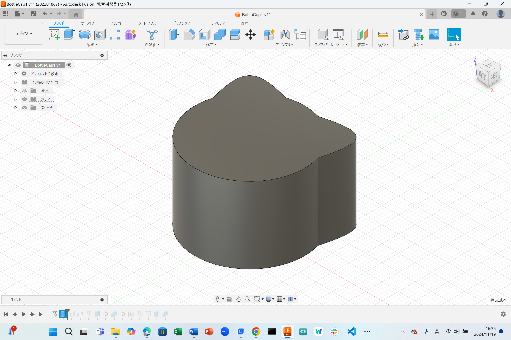
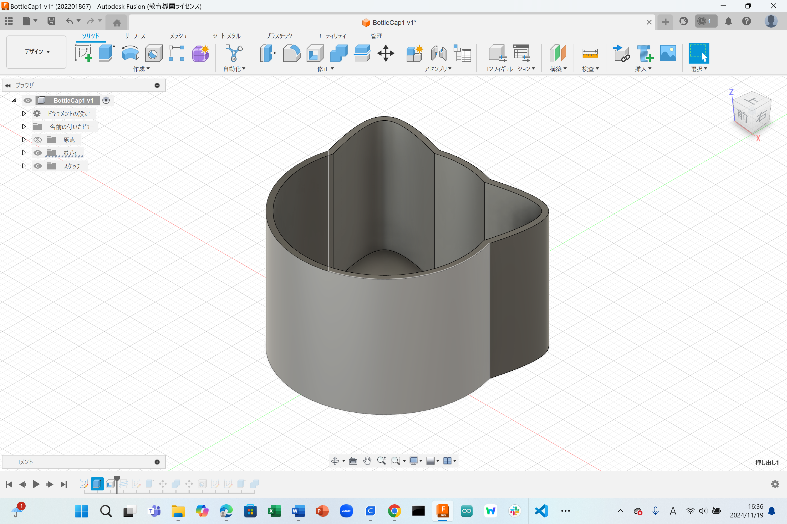
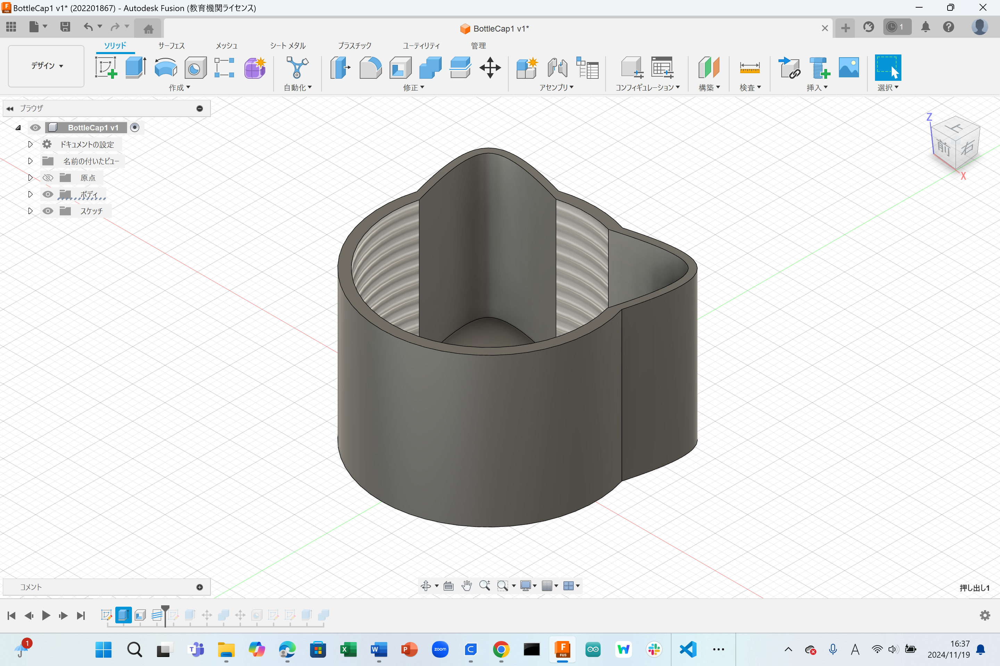
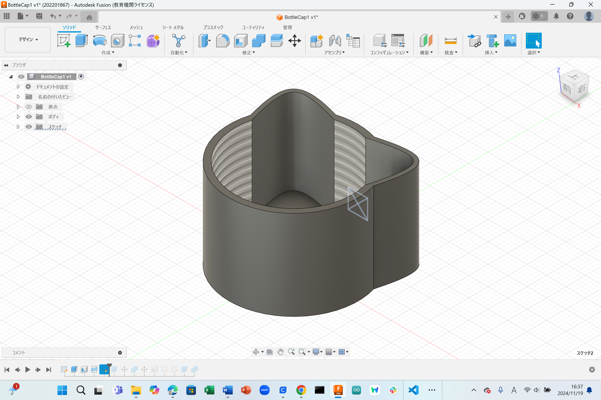
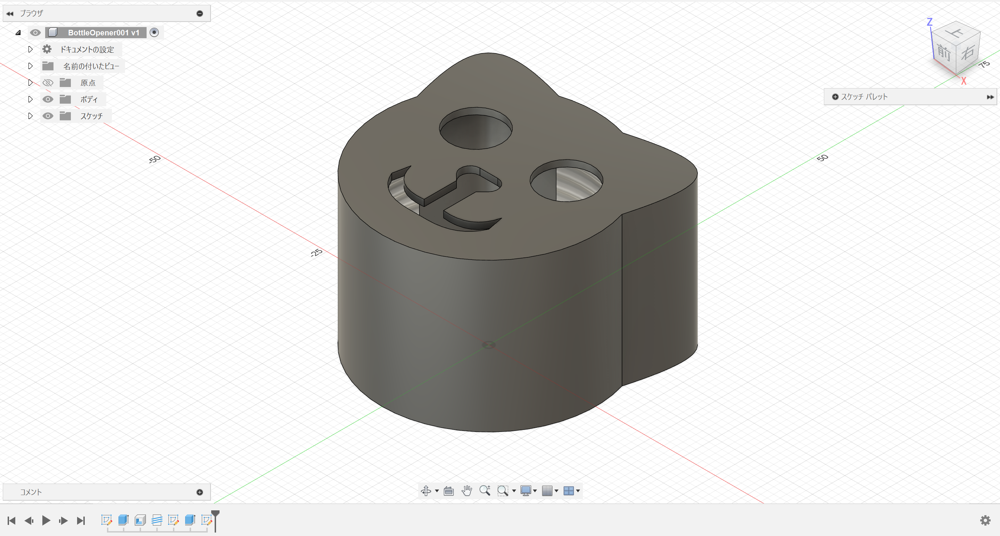
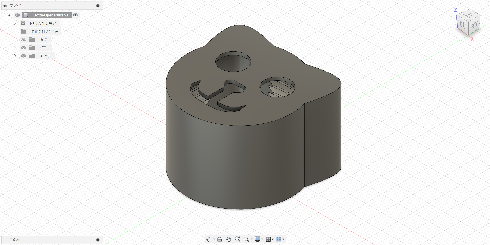

概要
神奈川大学のごみ集積所では燃えるごみとプラスチックの分別が全くできていない。そのため職員さんに多大な負担がかかっている。
今回は金型の材料であるペットボトルのキャップを使って製品を作ることになった。
私はその身近なところからヒントをいただきボトルキャップを提案する。
出力した作品は強度が足りず、回すと滑ってしまう。強くキャップの部分をつまんで回せば少しずつ開くようにはなった。
しかし、肝心の開けやすくなるわけではないので失敗であった。
発表スライド
製作過程






最終回